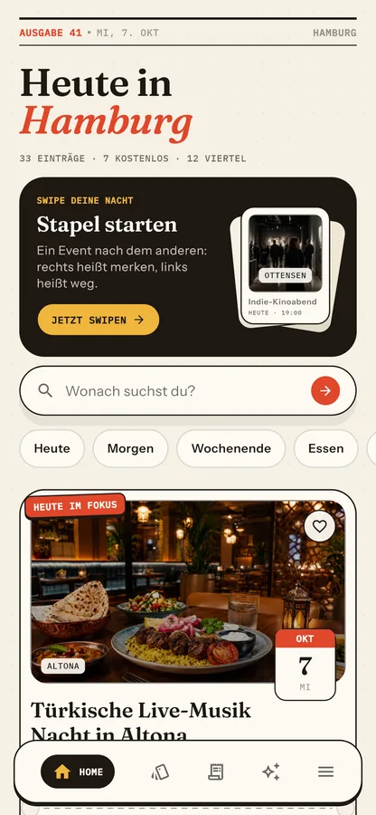
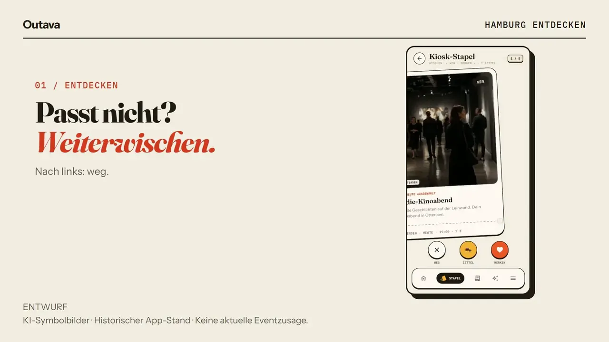
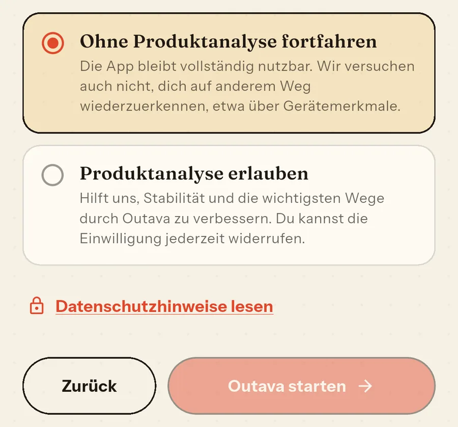

Projekt 4 von 7 · Aleks Paramonov
Outava
Event-App für Hamburg mit Kartenstapel, Suche und KI-Guide
Testversion, nicht im Store
- Status
-
- Testversion für iOS und Android.
- Im Gespräch führe ich sie vor.
- Zeitraum
- seit 05/2026, letzter Stand 10/2026
- Online
- nicht öffentlich
- Mein Anteil
- Gemeinsames Projekt mit einem Geschäftspartner. Mein Teil: die gesamte Technik, also App, Datenimport, KI-Guide und das Admin- und Sponsorenportal, umgesetzt mit Coding-Agenten.
AppTestlauf

AppTestlauf


Was es tut
Gedacht ist die App für Leute, die abends oder am Wochenende in Hamburg etwas unternehmen wollen. Sie zeigt, was heute und in den nächsten Tagen los ist. Man wischt Karten mit Veranstaltungen wie einen Stapel durch: links heißt weg, rechts merken, nach oben kommt die Veranstaltung auf den Abendzettel, die Liste für den Abend. Eine Suche findet Veranstaltungen und Orte, und ein KI-Guide nimmt Wünsche in normalen Sätzen an und zeigt passende Veranstaltungen.
Was daran schwierig war
Der Import schreibt nur Geändertes: 29 statt 97 Minuten
Die Termine kommen aus dem Veranstaltungsfeed der Hamburg Tourismus GmbH, rund 50.000 pro Lauf. Für jeden Termin speichert eine geschützte Tabelle zwei Prüfsummen, eine Art Fingerabdruck: eine der gelieferten Daten und eine des gespeicherten Stands. Sind beide unverändert, schreibt der Import den Termin nicht neu. Der erste Lauf baut diesen Zwischenspeicher auf. Im Folgelauf wurden 1.102 Termine geschrieben und 49.114 übersprungen.
Veranstaltungsfeed Eine Liste mit Veranstaltungen, die andere Programme abrufen können.
- Altes Verfahren, 16.10.2026
- 97 Minuten
- Neu, erster Lauf, 22.10.2026
- 82 Minuten
- Neu, Folgelauf, 22.10.2026
- 29 Minuten
Von den 29 Minuten des Laufs entfielen rund 20 auf den Import selbst, der Rest vor allem auf die Einordnung der Termine.
KI-Guide mit Gemma 4 auf einem Server in Paris
Das Sprachmodell füllt aus der Frage nur feste Suchfelder aus, über die Vorschläge entscheidet es nicht. Es läuft in der EU, und vor der ersten Anfrage bittet die App um Erlaubnis. Für die aktuelle Fassung des KI-Guides gibt es noch keine Messung am Sprachmodell.
- Frage in normalen Sätzen
- Sprachmodell füllt feste Suchfelder aus
- Server wählt aus und sortiert
- Programmcode prüft Zeiten, Öffnungszeiten und Wege
- Vorschläge
Erklärvideo

Android-Emulator


Technik
Flutter/Dart, PostgreSQL (Supabase), Python, TypeScript, React, GitHub Actions, Sprachmodell Gemma 4 bei Scaleway in Paris
Für Entwickler: Aufbau
- Veranstaltungsfeed der Hamburg Tourismus GmbH
- Import in GitHub Actions, mit Zwischenspeicher
- PostgreSQL bei Supabase
- Suche auf dem Server, Treffer seitenweise
- App in Flutter
Der KI-Guide läuft als Supabase Edge Function in TypeScript und nutzt Gemma 4 über Scaleway in Paris.
Der Suchindex umfasste am 11.09.2026 rund 59.000 Veranstaltungen und über 24.000 Orte. Bei den Veranstaltungen sind das mehr, als der Feed an diesem Tag lieferte, weil der Index auch den vorhandenen Bestand enthält. Für App, Server, Portal und Datenimport gibt es über 2.500 automatisierte Tests (Stand 22.10.2026).